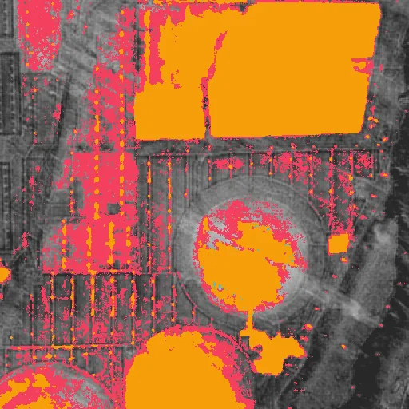
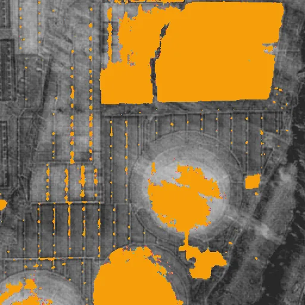
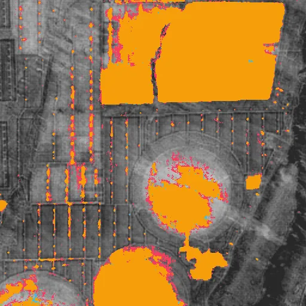
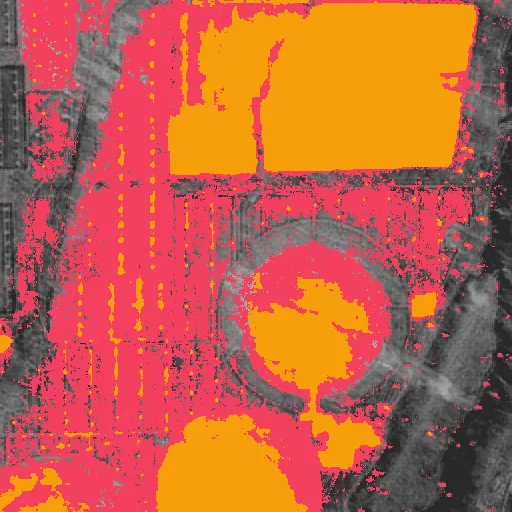

Benchmark / Use cases / Change detection / Results / change-12
change-12
The original change map in orange over the 2025 embedding.
Sample
| site | talatan |
|---|---|
| change | solar fields built |
| lon | 100.6281 |
| lat | 36.1232 |
| crs | EPSG:32647 |
| transform | 643950.0 10.0 0.0 4001400.0 0.0 -10.0 |
| shape | 64x512x512 |
| dtype | int8 |
Compression ratio and change_iou
Each point is a bound on the root-mean-square error, written next to it in codes of the quantised embedding, on this sample.
GeoZL PIVCOGeoZL PFORJPEG XL
Decoded change maps
The result on the compressed copy at each error bound, in codes of the quantised embedding.changed on bothlostnew
GeoZL PIVCO

5.4× · change_iou +0.981

7.1× · change_iou +0.965

12.9× · change_iou +0.874

22.4× · change_iou +0.583

37.4× · change_iou +0.407
GeoZL PFOR

3.3× · change_iou +0.981
3.7× · change_iou +0.965

5.6× · change_iou +0.874

9.6× · change_iou +0.583

16.1× · change_iou +0.407
JPEG XL
8.9× · change_iou +0.981
24.7× · change_iou +0.965
92.9× · change_iou +0.925
149.9× · change_iou +0.904

149.9× · change_iou +0.904